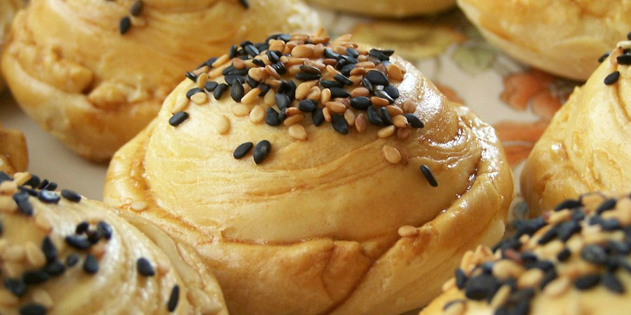
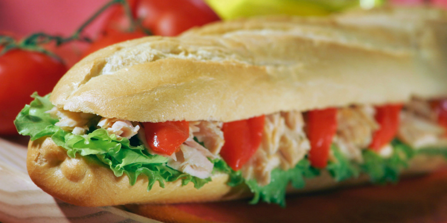
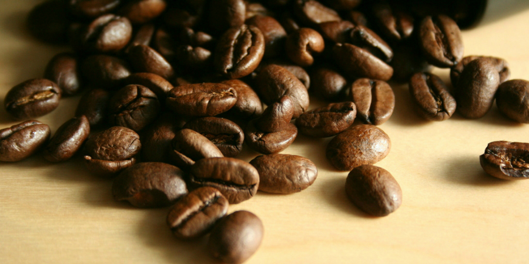
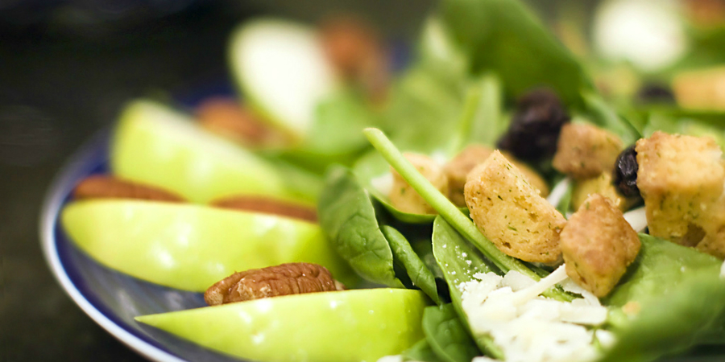
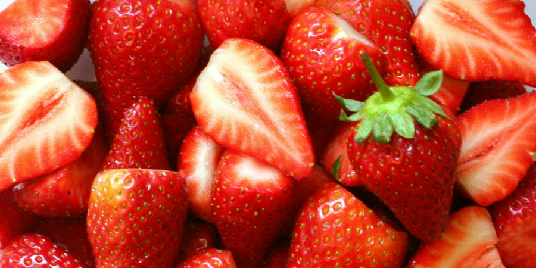

About
Cook
Location
Contact


Sandwitch
Li Europan lingues es membres del sam familie. Lor separat existentie es un myth. Por scientie, musica, sport etc, litot Europa usa li sam vocabular. Li lingues differe solmen in li grammatica, li pro

Coffee Beans
The European languages are members of the same family. Their separate existence is a myth. For science, music, sport, etc, Europe uses the same vocabulary. The languages only differ in their grammar,.

Salad
Far far away, behind the word mountains, far from the countries Vokalia and Consonantia, there live the blind texts. Separated they live in Bookmarksgrove right at the coast of the Semantics, a large.

Strawberry
A wonderful serenity has taken possession of my entire soul, like these sweet mornings of spring which I enjoy with my whole heart. I am alone, and feel the charm of existence in this spot, which was.